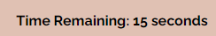

Where the name of the game is finding which 2 boxes produce the same sound, or the unison tone.
You'll start by selecting a difficulty
You'll see your selection by the border changing to a new color!
Once you've made your selection, simply press start! (Simple enough, right?)
Once "start" has been selected, a grid will appear based on the difficulty selected. The grid of choice will also contain boxes, and these boxes contain randomly generated notes. And it so happens that two of the boxes contain the same note. Find the two boxes that contain the same note, and they will disappear. Make the entire grid disappear, and you win!
But how do we interact with the box, you ask? Just click or touch the box, and your first selection will change color and make a sound! The second selection will either produce a sound and stay there or produce a sound and disappear!
Be careful! Remeber, there is a timer.

The grid must be solved before the timer runs out or you'll lose!
But most importantly of all, this game enforces tonal recognition, and it is not always easy! Learn and have fun!
Press the restart button to select a new difficulty and try again!